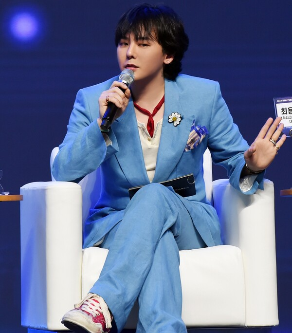

참신한 음악적 감각과 남다른 매력으로 대중을 매료시킨 힙합 아티스트
대한민국의 가수이자 음악 프로듀서. 그룹 BIGBANG의 멤버로 활동 중이다. 그룹 내에서 리더, 메인래퍼, 리드댄서, 서브보컬을 맡고 있다. 2006년 그룹 BIGBANG으로 데뷔하여 본인이 단독 작사 작곡한 '거짓말'의 히트 이래 15년이 넘도록 커리어를 이어오며 음악, 패션, 여러 문화 산업에 영향을 끼치는 등, K-POP 역사에 중요한 역할을 해낸 가수 중에 한 명이다. 가수의 영역을 넘어 21세기 한국 대중문화를 상징하는 인물 중 하나이자 아시아 패션시장에서도 영향력을 가진 인물로 자리매김했다.